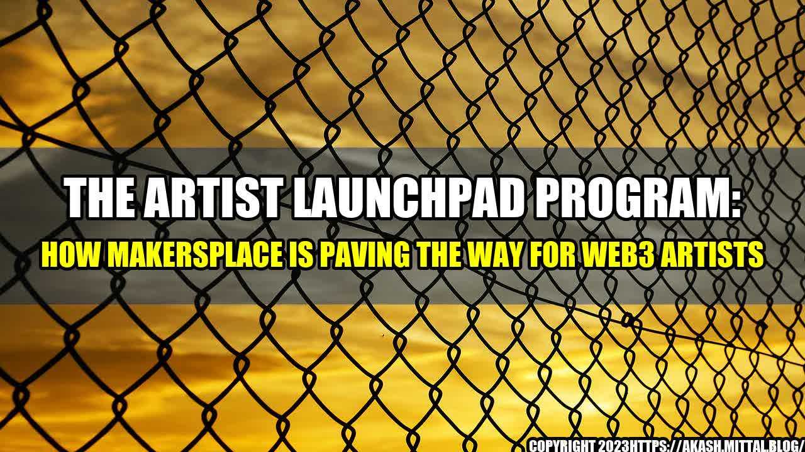

The Artist Launchpad Program: How MakersPlace is Paving the Way for Web3 Artists
When web3 artist Ana Lopez started out, she had no idea how to navigate the art world. She had the talent and drive, but lacked the connections and resources to get her foot in the door. That all changed when she discovered MakersPlace's Artist Launchpad Program, which offered mentorship, networking opportunities, and resources to help up-and-coming artists like her succeed.
"The Artist Launchpad Program was a game-changer for me," Ana says. "I was able to connect with other artists and industry professionals, and I learned so much about how to market and promote my work. Without it, I would still be struggling."
Success
The success of MakersPlace's Artist Launchpad Program can be seen in the impressive roster of artists who have participated. Many of them have gone on to achieve significant recognition and success in the art world. For example:
- Alejandro Garcia - Before joining the Artist Launchpad Program, Alejandro had only sold a few pieces of his digital art. After completing the program, he was able to secure several high-profile commissions and was featured in a major art exhibition.
- Samira Salazar - Samira was struggling to make a name for herself in the crowded digital art space. With the help of the program's mentors, she was able to refine her artistic vision and develop a unique style that caught the attention of collectors and curators.
- Max Ramirez - Max had a large social media following but wasn't sure how to turn that into meaningful sales. Through the Artist Launchpad Program, he learned how to leverage his online presence to build lasting relationships with collectors and generate steady income from his art.
How the Artist Launchpad Program Works
The Artist Launchpad Program is an intensive, three-month program designed for emerging web3 artists who are looking to take their careers to the next level. Participants receive personalized mentorship from established artists and industry professionals, as well as access to a network of like-minded creatives.
The program is broken down into three phases:
- Discovery: Participants are introduced to the program and complete an assessment that helps identify their strengths and areas for improvement. They also attend workshops on topics like branding, marketing, and intellectual property.
- Development: During this phase, participants work closely with mentors to develop their artistic vision and hone their skills. They receive feedback on their work and learn how to create a cohesive body of work that can be marketed and promoted effectively.
- Launch: In the final phase, participants develop a comprehensive plan for launching their careers. They learn how to build relationships with collectors, leverage social media, and navigate the art world. They also have the opportunity to showcase their work in a curated exhibition.
Conclusion: How the Artist Launchpad Program is Changing the Game for Web3 Artists
- Access to Resources: The Artist Launchpad Program provides web3 artists with the resources they need to succeed, from mentorship to workshops to networking opportunities. This level of support is rare in the art world, where emerging artists often struggle to find the guidance they need.
- Equitable Opportunities: The program is designed to support artists from diverse backgrounds and perspectives, creating a more equitable art world. This is especially important in the web3 space, where there is a significant opportunity to challenge existing power structures.
- A Stronger Web3 Art World: By supporting emerging web3 artists, MakersPlace is helping to build a stronger, more vibrant art world. These artists are pushing the boundaries of what is possible with digital art and are creating work that is both beautiful and impactful.
Curated by Team Akash.Mittal.Blog
Share on Twitter Share on LinkedIn